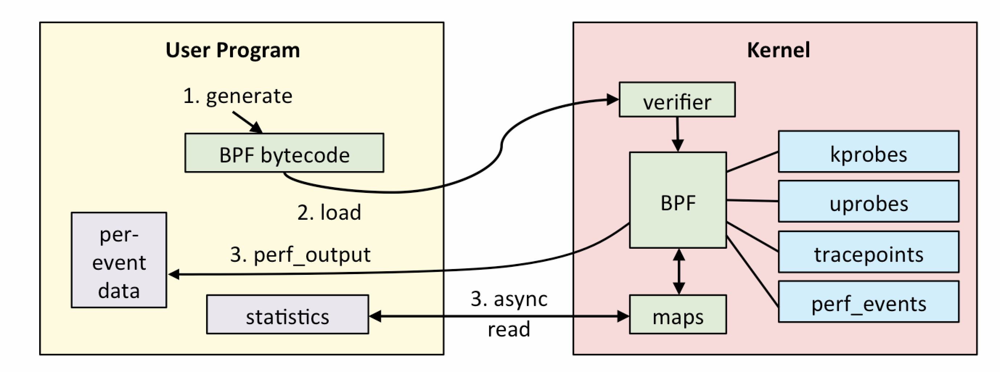
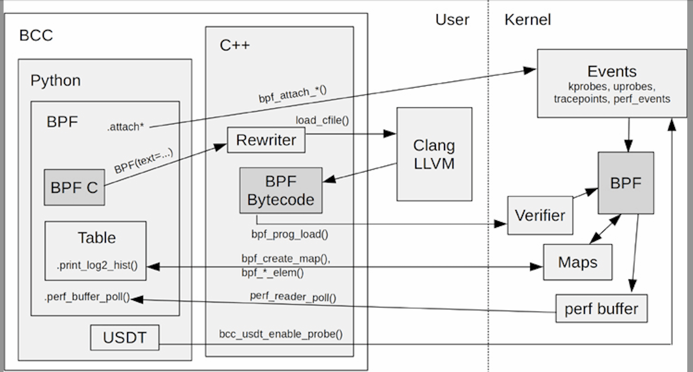
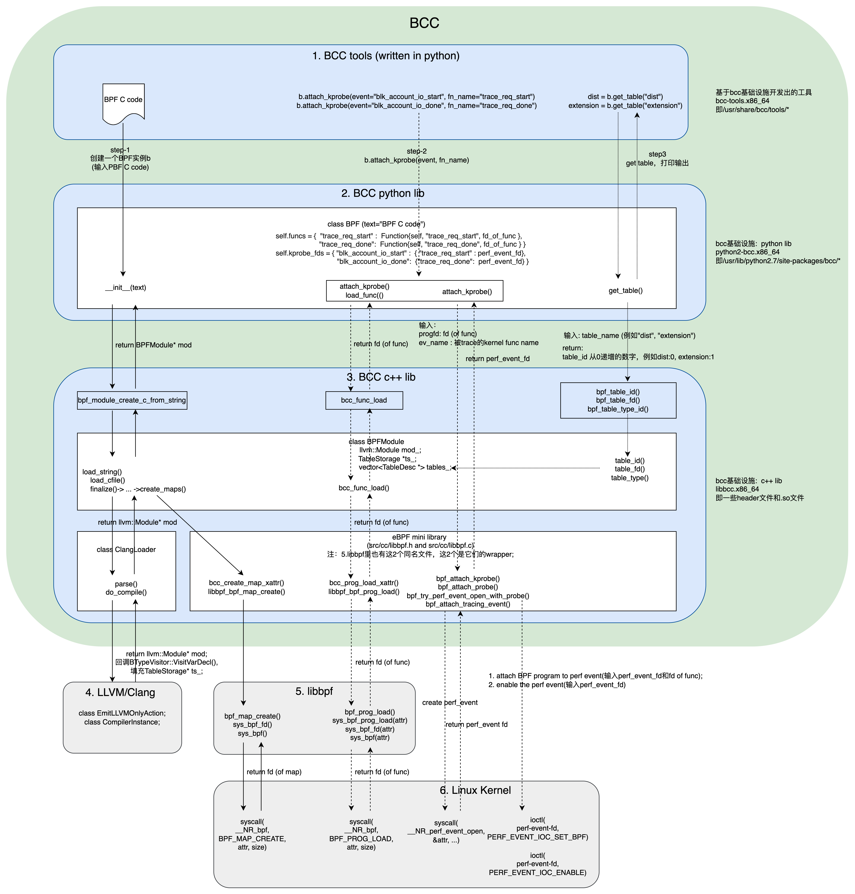
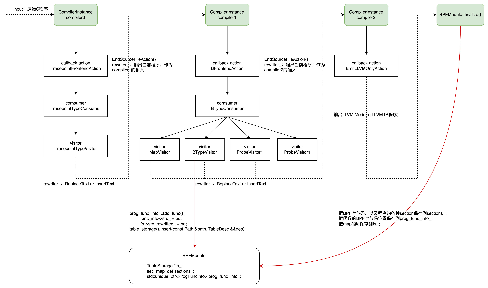

详细介绍eBPF的实现原理。
前言 (1)
读Brendan Gregg的BPF Performance Tools这本书有一段时间了，但一直感觉没有深入理解：一方面工作中接触的内核版本比较低所以很少有机会用得上，另一方面此书洋洋洒洒七八百页，大部分篇幅讲的是如何使用作者开发的BPF工具，对工具是如何开发出来的，以及如何在系统上跑起来，只是作原理上的描述，没有体感。所以，“纸上来得终觉浅”，要想搞得更深入一点，还是要看代码，做实验。本文通过“解剖一只麻雀”，来揭开BPF的神秘面纱。
本文的实验环境:
- Linux kernel 5.10.161；BTF（TODO：第几节）是在kernel 5.2以后引入的，所以选择了5.2之后的版本；
- LLVM/Clang 15.0.0；
- BCC 0.26.0（https://github.com/iovisor/bcc/releases），这是当前（2022.12.30）的最新版本；
- TODO: bpftrace ??
BPF的原理 (2)
BPF(Berkeley Packet Filter)，如其名字所示，最早是为了优化抓包工具的性能而开发的。BPF是一个执行引擎（也就是VM: Virtual Machine），可以执行mini程序。用户的包过滤表达式被编译成BPF指令来执行。我们常用的tcpdump就是使用BPF实现的；可以使用tcpdump -d选项打印出BPF指令。不过，这时的BPF只用于网络抓包方面，VM寄存器和内存也都比较小。
Alexei Starovoitov在2013年重写了BPF并在2014年被发布到linux内核。这次重写把BPF变成了一个通用的VM（general-purpose VM），不只能执行网络相关的指令，还能执行其他程序，同时也扩充了寄存器和内存，加入了一种叫map的storage（后面会看到）。此外，BPF指令还能够被JITed (Just In Time)，即编译成本地native指令，然后优化并执行。这真正让内核变得可编程（programmable）了。此时BPF也被叫做Extended BPF，即eBPF。和社区习惯一样，本文不特意区分，BPF就是指eBPF。
到网上搜BPF的话，极有可能搜到Brendan Gregg的这张图：

从这张图可以看出，“要把大象装冰箱”总共分3步：
- 写BPF程序；
- 把BPF程序加载到内核；
- BPF程序被event触发执行并输出结果；
原理很清晰，但要实施起码要解决或者回答以下问题：
- BPF程序用什么语言写？长啥样？
- 如何编译成BPF字节码（BPF bytecode）？用什么编译器来编译？
- 如何加载到内核？
- 如何和event绑定，以至于被触发运行？
- 如何从用户态获取到BPF程序的输出？
其实有些问题不止一个答案，比如BPF程序用什么语言写，可以用C语言，也可以用LLVM IR，还可以用bpftrace（一种类似DTrace或者SystemTap的语言）。至于如何加载、运行等，则需要一整套基础设施来配合完成。如果把上述原理看做一个抽象架构的话，则BCC（BPF Compiler Collection）就是这个架构的一个具体实现（bpftrace是另一个实现）。
BCC (3)
如下图所示，从本质上讲，BCC（BPF Compiler Collection）是为BPF工具的开发者提供的一整套基础设施，使得BPF工具开发者能够：

- 使用C语言写BPF程序；
- 在编译之前，对BPF程序进行rewrite（例如把
pid_t pid = task->pid;重写成pid_t pid; bpf_probe_read(&pid, sizeof(pid), &task->pid);）。Rewrite能力是BCC的特色。 - 把BPF程序编译成BPF字节码；
- 把编译出的（以及rewritten）BPF字节码加载到内核；
- 把BPF program（就是BPF程序中的函数）attach到events（例如kprobe）；
- 从BPF map storage读取BPF的输出；
也就是说，这些基础设施是一些库、编译器、脚本等东西，使用这些东西能够完成上面的步骤。除此之外，BCC的发布中还包含很多基于这些基础设施开发的BPF工具，biolatency就是其中的一个，用于统计block层request的延迟。它就是我们要解剖的“麻雀”。接下来我们通过研究它来看BCC基础设施如何配合工作，目的是了解BPF原理如何落地，以便在必要的时候，有能力开发自己的BPF工具。
首先，针对biolatency这个特例，我把BCC的架构图细化一下（图中绿色部分属于BCC范畴，LLVM/Clang和libbpf是BCC的依赖库）:

从BPF C程序开始 (3.1)
BPF工具biolatency是一个python脚本。首先，把BPF C语言程序片段保存存在一个str变量里：bpf_text=C语言程序。
然后对bpf_text进行整理：C程序里包含一些Place Holder，根据命令行选项来替换这些Place Holder。例如当命令行中有-d sdb这样的选项时，DISK_FILTER这个Place Holder被替换成（假设/dev/sdb的major为253，minor为0）:
1 | struct gendisk *disk = req->rq_disk; |
当然，这些都是细节，是工具开发者为使用者提供的便利，若是我们自己开发这个BPF工具，可以查到/dev/sdb的major/minor并直接写在程序里，或者把major/minor作为命令行参数。
然而，有一个替换不得不提：
1 | if BPF.kernel_struct_has_field(b'request', b'rq_disk') == 1: |
意思是，若内核结构体struct request有rq_disk字段，就把__RQ_DISK__替换为rq_disk；否则替换为q->disk。这个替换和上面对DISK_FILTER的替换可不是一码事，因为这里涉及到“可移植性”这个话题，并且利用了BTF（BPF Type Format）。BPF的先驱们为“BPF程序的可移植性”做了很多努力，他们的终极目的是CO-RE（Compile Once – Run Everywhere：编译一次，到处运行；见第TODO节）。我们正在研究的biolatency没有达到CO-RE，它每次执行都要重新编译（使用LLVM/Clang编译，见后文），但它也在为“可移植性”而努力：通过这个替换，可以达到编写一次，到处编译。若没有这个自动替换，我们将不得不为不同版本的kernel编写不同的代码，struct request定义不同，BPF C程序也要相应地写做rq_disk或q->disk.
经过这些替换，最终生成合法的BPF C程序。我们可以使用--ebpf选项打印出来：
1 |
|
这就是BPF程序的庐山真面目了，它将被编译成BPF字节码并加载到内核执行。可能从函数的名字trace_req_start和trace_req_done你也能猜出，这两个函数将被attach到block-IO的开始和结束处，用以统计block-IO的执行latency。如何统计的呢？看这两个函数的逻辑。
trace_req_start：block-IO开始时，把req的指针以及当前系统时间记录到start中（从其声明可以看出，start应该是一个哈希表）；trace_req_done：block-IO结束时，从start哈希表查出req的开始时间，用当前时间（结束时间）减去开始时间便得到结果delta；然后把delta存到dist（从声明可以看出它是一个直方图），并累加extension（它是一个长度为1的数组，类型是ext_val_t）；
值得一提的是，这里用到的start、dist和extension都是map storage，后面将介绍它们。这两个函数相当简单。不过，下面就进入BCC的难点了。
Rewrite和编译 (3.2)
我们需要把BPF C程序编译成BPF字节码，这样BPF VM才能够执行，这很容易理解。但在编译之前BCC还会对程序进行rewrite：因为这些程序员眼中看似合法的C程序，对于BPF VM这个特殊的执行引擎来说不一定合法，例如不能直接dereference指针而要通过bpf_probe_read函数。BCC的核心能力之一就是能够对程序进行rewrite。Rewrite和编译的过程如图4所示：
BPF C程序的rewrite和编译全被封装在biolatency的这一行:
1 | b = BPF(text=bpf_text) |
它构造一个BPF对象，输入参数正是上一节我们看到的C程序。Python类class BPF定义在src/python/bcc/__init__.py中。从前面的图3可知，python库python-bcc是C++库libbcc的一个封装。
Python class BPF的主要函数：
__init__：调用bpf_module_create_c_from_string。这个函数封装了从C代码到BPF字节码转化的全过程：对C程序进行rewrite，然后编译生成LLVIM IR，最后编译成BPF字节码。下文很大篇幅讲的都是bpf_module_create_c_from_string内部的细节。最终，这个函数返回一个BPFModule对象。它是一个C++类，里面封装一个llvm::Module对象，其中有BPF字节码程序。所以，这一步之后，我们就有了BPF程序，剩下的就是加载、执行了。若C程序中的函数名符合特定规则，BPF::__init__还会自动加载；biolatency中的trace_req_start和trace_req_done都不符合，所以不自动加载。load_func：加载BPF函数（biolatency中的trace_req_start和trace_req_done）到内核；细节见第3.4节。attach_*：把BPF函数attach到event；从图1可以看到，支持多种类型的event：kprobe, uprobe, tracepoints等；biolatency只用到kprobe；所以第3.5节我将介绍attach_kprobe。get_table：table即前面所说的BPF map storage，从它可以读取BPF程序的输出。第3.3节将介绍map storage是如何创建的。
Python class BPF的主要字段：我们知道，linux中内核把很多东西抽象成文件，用户态程序与之交互的一个重要手段是fd，或者说内核把很多东西作为fd暴露给用户态程序。这里也不例外，BPF函数（trace_req_start和trace_req_done）加载之后返回prog或者funcfd；map storage创建返回mapfd；Attach BPF函数之后也得到一个perf_eventfd；class BPF实例的主要字段就是这些fd。
本小节我们只看BPF.__init__：调用C++库函数bpf_module_create_c_from_string来rewrite和编译BPF C程序。
BPFModule类 (3.2.1)
函数bpf_module_create_c_from_string的第一个事情就是构造一个class BPFModule的对象。BPFModule是C++库libbcc中的最重要的类，它的重要数据成员是：
std::unique_ptr<llvm::Module> mod_：这个Module是LLVM领域的概念，它是LLVM IR Objects（全局变量、函数及符号表）的顶层容器；多个Module又构成LLVM程序。所以这个mod_就是3.1节的BPF C程序编译出的LLVM IR程序（我们的C程序只有一个模块，所以也只有一个LLVM Module）。从名字上看class BPFModule是对llvm::Module的封装，但事实上class BPFModule涵盖的内容要广的多：因为mod_还不是BPF字节码，而是LLVM IR程序；所以class BPFModule还要把LLVM IR转化成BPF字节码，并且还负责加载及读取输出等诸多事情。从BPF C程序到LLVM IR的转化是在ClangLoader::do_compile中完成的。std::unique_ptr<ProgFuncInfo> prog_func_info_：如上所述，mod_是LLVM IR程序，下一步是把它转化成BPF字节码，这是在BPFModule::finalize中完成的。BPFModule::finalize把trace_req_start和trace_req_done的LLVM IR指令转化成BPF字节码，并把BPF字节码的起始地址和size保存到prog_func_info_中。以后加载这2个函数到内核（第3.4节）就从prog_func_info_查找BPF字节码的起始地址和size。sec_map_def sections_：如上所说，prog_func_info_中保存着trace_req_start和trace_req_done的起始地址和size，但prog_func_info_并不own这些内存空间；真正own这些空间的是sections_。也就是说，起始地址和size指向的空间在sections_中；sections_由MyMemoryManager管理。BPFModule::finalize把LLVM IR程序转化成BPF自己码之后，ExecutionEngine engine_回调MyMemoryManager，填入BPF字节码。TableStorage *ts_：前面提到BPF map storage；这些东西在书中叫map，在代码中叫table。第3.1节的C程序中的start，dist和extension都是storage，它们被分别声明为BPF_HASH，BPF_HISTOGRAM和BPF_ARRAY类型；从名字可以猜测，分别是哈希表、直方图和数组。这是BPF程序在内核里执行时用到的数据结构。例如trace_req_start把请求req的地址保存在start哈希表中，trace_req_done又从中查询出来，这和我们利用std::map写用户态程序是一样的。而dist和extension是用来保存程序输出数据的。在编译时，会生成这些变量的描述信息，并通过callback机制向ts_填入这些数据结构的描述。
Rewrite并编译成LLVM IR程序 (3.2.2)
继续说bpf_module_create_c_from_string，它构造class BPFModule对象之后，就调用其load_string函数，输入的就是第3.1节的C程序文本：
load_cfile()：把C程序编译成LLVM IR程序，中途进行rewrite；这是本小节的内容。finalize()：把LLVM IR程序翻译成BPF字节码；我们将在第3.2.5节介绍。
BPFModule::load_cfile构造一个ClangLoader对象，然后调用parse，进而调用do_compile，这里就是rewrite和编译的核心代码。抛开纷繁的细节，主要流程是3阶段翻译：每个阶段构造一个clang::CompilerInstance实例，上一个阶段的output是下一个阶段的input，并且每个阶段都有一些callback；如上一节所述，BPFModule中的一些字段就是通过这里的callback动作填值的（如图5红线所示）；BCC的rewrite也是通过callback实现的。

第0阶段（compiler0），即TracepointFrontendAction中所做的事情是: 检查每个函数的每个参数，若参数的类型符合pattern (?:struct|class)\s+tracepoint__(\S+)__(\S+)，就在该函数前插入struct tracepoint__{category}__event {...};. 我们的biolatency没有这样的函数，暂不深究。
第1阶段（compiler1），BFrontendAction中有3种（4个）visitor：a. ProbeVisitor; b. MapVisitor; c. BTypeVisitor; 它们所做的事分别是：a. ProbeVisitor把指针dereference（即*ptr）rewrite成bpf_probe_read_xxx(ptr)；b. MapVisitor把start.update(...)这的map/storage访问rewrite成bpf_map_update_elem(...)；c. BTypeVisitor
Callback类TracepointFrontendAction和BFrontendAction都实现clang::ASTFrontendAction接口，override函数CreateASTConsumer和EndSourceFileAction；所以clang::CompilerInstance才知道如何回调它们：
- 首先，调用
CreateASTConsumer函数获取consumer，TracepointTypeConsumer或者BTypeConsumer，这些consumer又实现clang::ASTConsumer接口，override接口中的Handle*系函数，例如HandleTopLevelDecl和HandleTranslationUnit。 - 有了consumer，
clang::CompilerInstance在处理C程序的过程中，遇到函数声明、函数调用、函数参数，变量，表达式等单元的时候，就调用consumer的对应的Handle*系函数； - 同时consumer又持有一些visitor：它们都实现
clang::RecursiveASTVisitor接口，override接口中的Visit*系函数；Handle*函数被调用时，就会调用visitor的Visit*函数； - 最后，当前
clane::CompilerInstance处理过的程序文本，作为下一个CompilerInstance的输入。
BCC的rewrite能力就是在这些Visit*函数中实现的，其中最主要的是：
- 如果一个BPF函数要被probe触发执行，则它们都有
struct pt_regs* ctx参数（probe通过struct pt_regs* ctx传递参数）；否则，函数没有struct pt_regs* ctx参数，它肯定不能被probe调用，故而只能被模块内其他函数调用，所以Rewriter为其加上__attribute__((always_inline))属性，作为优化。 - BPF VM是一个特殊的执行环境，由于安全性，不能直接dereference指针，所以要替换成
bpf_probe_read或者bpf_probe_read_kernel等； - 一些语法糖（syntax sugar）：例如第
trace_req_start中的start.update()，要替换成真正面目，如下written的C代码所示，bpf_map_update_elem(...);
对biolatency做简单修改，加上debug=DEBUG_PREPROCESSOR，就可以打印出rewrite之后的C程序：
1 | b = BPF(text=bpf_text, debug=DEBUG_PREPROCESSOR) |
输出如下，对比第3.1节，主要变化发生在对变量的访问上：
1 |
|
打印发生在compiler1的callback BFrontendAction::EndSourceFileAction中；也就是说，经过compiler0和compiler1，结果还是C程序，只是发生了rewrite。最后由compiler2把rewritten的C程序编译成LLVM IR程序；这是clang的事，我们不深入了。
生成map storage的描述信息 (3.2.3)
如图5所示，在callback中还有做了一些重要的事，其中之一就是生成map的描述信息并存到BPFModule::ts_字段中；这是在函数BTypeVisitor::VisitVarDecl(VarDecl *Decl)中完成的。看参数可知，这个callback是clang::CompilerInstance在处理过程中遇到变量声明的时候触发的；所声明的变量自然是start, dist和extension:
1 | BPF_HASH(start, struct request *); |
此函数处理一个map（在代码中叫table）变量声明：构造一个TableDesc对象，它描述一个BPF map/table的信息:
name就是start，dist或者extension；fd暂时不填（除非用户设置了pinned fd），到3.3节，真正在内核里创建它们的时候，才返回fd；- 其他就是map/table字段的描述信息；
生成之后，调用Insert保存到BPFModule::ts_中。
生成func描述信息 (3.2.4)
和生成map storage的描述信息类似，在callback中还生成了函数（trace_req_start和trace_req_done）的描述信息，并存到BPFModule::prog_func_info_字段中。这是在函数BTypeVisitor::VisitFunctionDecl(FunctionDecl *D)中完成的。从参数可看出，这个callback是clang::CompilerInstance遇到函数声明的时候触发的。这里把函数的信息填到BPFModule::prog_func_info_中，并把函数的C语言源代码（未rewrite之前的）保存在FuncInfo::src_中。
到compiler1结束时，调用callback BFrontendAction::EndSourceFileAction，还会把rewritten的C语言源代码保存在FuncInfo::src_rewritten_中。
值得强调的是，此时BPF字节码程序还没有生成，自然也没有填写；我们将在下一节看到，BPF字节码生成之后，起始地址和size也被保存在BPFModule::prog_func_info_中。
从LLVM IR到BPF字节码 (3.2.5)
回到BPFModule::load_string函数，生成LLVM IR以及map/table的描述信息之后，就调用BPFModule::finalize，这里继续编译工作：
- 首先生成一个
ExecutionEngine实例，它就是编译LLVM IR的引擎；编译成什么呢？一般而言，是编译成某种architecture（如x86, ia64）的汇编，这里当然是编译成BPF字节码。注意：这是LLVM对BPF提供的支持。所以，它通过如下代码把architecture设置成bpf:
1 | builder.setMArch("bpf"); |
- 然后调用
run_pass_manager进行编译。我们也可以对biolatency做简单修改，加上debug=DEBUG_LLVM_IR，让它在编译之前打印出LLVM IR程序：
1 | b = BPF(text=bpf_text, debug=DEBUG_LLVM_IR) |
输出的LLVM IR程序（截取trace_req_start）如下:
1 | define dso_local i32 @trace_req_start(ptr nocapture noundef readonly %0) local_unnamed_addr #0 section ".bpf.fn.trace_req_start" !dbg !5370 { |
真正的编译工作是LLVM的事，我们不涉及。编译之后得到的BPF字节码也可以通过修改biolatency（加上debug=DEBUG_SOURCE）来打印：
1 | b = BPF(text=bpf_text, debug=DEBUG_SOURCE) |
输出的BPF字节码程序（截取trace_req_start）如下:
1 | Disassembly of function trace_req_start |
如图5所示，生成的BPF字节码，以及各种section（例如.text, .symtab, .debug_info, .BTF, .BTF.ext, .maps.start, .maps.dist, .maps.extension，和ELF类似），被保存到BPFModule::sections_中。这是通过ExecutionEngine回调MyMemoryManager完成的。
至此，“把大象装冰箱”的第1步算是完成了：终于得到了BPF字节码。如图5所示，函数trace_req_start和trace_req_done的BPF字节码起始地址和size被保存在BPFModule::prog_func_info_中（FuncInfo结构的start_和size_成员）。我们将在第3.4节看到，要加载函数到内核，要先到BPFModule::prog_func_info_中查函数BPF字节码的起始地址和size。
创建map storage (3.3)
生成BPF字节码之后，就要为加载运行做准备了。所以BPFModule::finalize还做了2个事情：
- 一个是处理BPF字节码程序中的BTF section（
.BTF和.BTF.ext）；这个是为可移植性而做的锦上添花的工作，我们留待后文介绍CO-RE（见第TODO节）时再说。 - 另一个就是创建map，代码中也叫table；这是本小节的内容。
第3.2.3节生成了map storage（start，dist和extension）的描述信息并存储到BPFModule::ts_字段；第3.2.5节中生成了这样一些section：.maps.start， .maps.dist和.maps.extension；这些都是死的东西，就像保存在ELF文件中或者读到内存中的可执行文件或者库文件。要在运行时使用它们，就要在内核中创建它们。它们有点类似于socket，创建之后返回一个fd，以后使用fd以及配套的系统调用来与内核交互。所以，这一部分不是BCC提供的能力，而是linux内核以及BPF库（图3中的libbpf）提供的。
BCC层（BPFModule::create_maps即被调用的函数）所做的事情不多，很快调用到libbpf库的bpf_map_create函数。这里代码风格有点眼熟，它和创建线程pthread_create类似，初始化一个bpf_attr attr，然后调用syscall：syscall(__NR_bpf, BPF_MAP_CREATE, attr, size)类似风格的syscall很常见。返回的map fd被保存在BPFModule::ts_中，如图5所示。
以后和map的交互都要通过fd来完成了。例如要在用户态更新map，可以调用libbpf库的bpf_map_update_elem函数，它最终对应的系统调用是：syscall(__NR_bpf, BPF_MAP_UPDATE_ELEM, ...)；再如，我们将在第3.6节读程序的输出，会调用bpf_map_lookup_elem，对应的系统调用是：syscall(__NR_bpf, BPF_MAP_LOOKUP_ELEM, ...)。此乃后话，现在程序还没被加载到内核，更别提运行乃至输出结果了。
加载函数到内核 (3.4)
现在，我们有了BPF程序的字节码，并且在程序运行要用的数据变量（map）也创建好了，接下来就是加载了。回到最上层biolatency，加载和attach到events是在这一行完成的（以trace_req_start为例）：
1 | b.attach_kprobe(event="blk_account_io_start", fn_name="trace_req_start") |
我们把attach留到3.5节，这里只看加载，即python库class BPF的load_func函数，输入的是函数名（以trace_req_start为例）：
lib.bpf_function_start：从C++库BPFModule::prog_func_info_中查trace_req_start的BPF字节码的起始地址；lib.bpf_function_size：同上，查size；- 调用C++库
lib.bcc_func_load；输入参数是BPF字节码的起始地址和size；
和创建map storage类似，通过系统调用，把函数BPF字节码加载到内核。其实BCC的核心功能是rewrite和编译，其他的流程借助BPF库（图3中的libbpf）完成，干预较少。所以，这里很快走到libbpf库bpf_prog_load函数，这里还是熟悉的配方：初始化一个bpf_attr attr，然后进行系统调用；syscall(__NR_bpf, BPF_PROG_LOAD, attr, size)。返回的是函数的fd（prog fd或者func fd），下面attach会用到它。
attach函数到events (3.5)
这一节我们要把函数（trace_req_start和trace_req_done）关联（attach）到对应的event上。显然，我们是想在内核函数blk_account_io_start被调用时触发trace_req_start；blk_account_io_done被调用时触发trace_req_done。因为blk_account_io_start/done都是内核函数，我们这里使用的event是kprobe。
上一节加载函数返回的prog fd（或叫func fd，记作progfd）是函数的抓手；event是blk_account_io_start/done；有了这两方，就可以进行关联（attach）了：
- python库
class BPF的attach_kprobe调用C++库函数bpf_attach_kprobe，输入prog fd和event name（p_blk_拼接内核函数名，即p_blk_account_io_start/done）； - 调用系统调用
syscall(__NR_perf_event_open, &attr, ...)创建一个perf_event，返回perf_event_fd； - 调用系统调用
ioctl(perf_event_fd, PERF_EVENT_IOC_SET_BPF, progfd)和ioctl(perf_event_fd, PERF_EVENT_IOC_ENABLE, 0)完成关联；
从BPF map storage读取输出 (3.6)
运行与观察 (3.7)
BTF (4)
抽象地说，BTF(BPF Type Format)是一个specification，用于定义和BPF program/map相关的debug-info的metadata format，最初只包括data types，后来又加入了function-info和line-info。BTF specification有两个部分:
- BTF kernel API
- BTF ELF file format
后者是描述ELF文件格式。